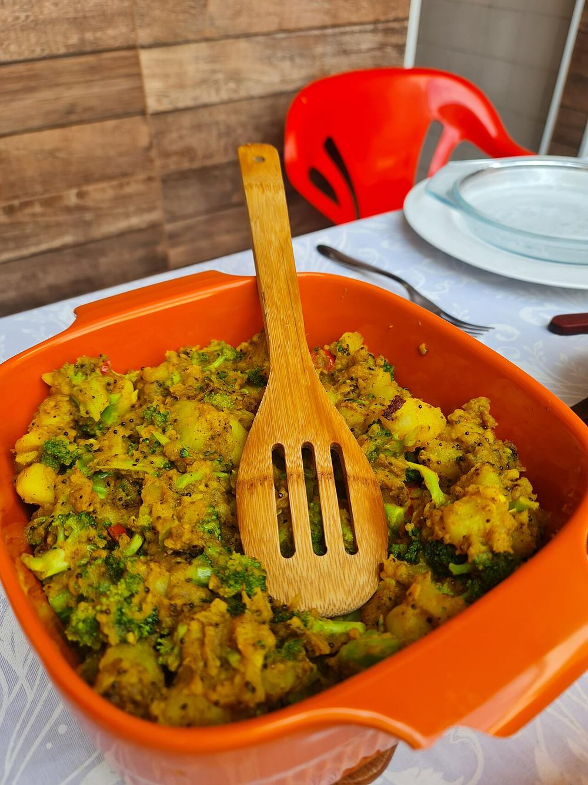

Sarson Wala Aloo
boiled potatoes turned through a sharp ground mustard paste, no onion or garlic

Contains: mustard
Ingredients
Quantities for 4.
- 700g, boiled, peeled and broken into rough chunks Potato
- 3 tbsp, yellow or a mix Mustard Seedsfor the paste
- 4 Green Chilli2 ground into the paste, 2 slit
- 4 tbsp Mustard Oil
- 1 tsp Nigella
- 0.75 tsp Turmeric
- to taste Salt
- 200 ml Water
- 1 tbsp Poppy Seedssoftens the mustard's edgeoptional
- 2 tbsp, chopped Coriander Leavesoptional
Cookware
stovetop, kadhai, blender
Checked against the ingredient list for ten allergens: milk, egg, fish, crustaceans, tree nuts, peanuts, sesame, mustard, soy and gluten. Brands vary, so read the label on anything new to you.
Before you start
- Soak the mustard seeds and poppy seeds in 100 ml warm water with a pinch of salt for 30 minutes. Unsoaked mustard grinds bitter.
- Boil the potatoes ahead and let them cool completely so they break into craggy chunks instead of mush.
- Grind the paste just before cooking; it turns acrid if it sits.
Method
- Grind the soaked mustard and poppy seeds with 2 green chillies, a pinch of salt and 3 tbsp of the soaking water to a smooth paste.Pulse rather than run the blender. Heat is what makes mustard bitter.
- Heat the mustard oil until it smokes, then lower the flame and let it settle 30 seconds.
- Crackle the nigella seeds for 20 seconds until they pop and smell smoky.
- Add the potato chunks and fry 6 minutes, turning gently, until the edges are crisp and golden.Give them a proper crust now; once the mustard paste goes in they will not brown any further.
- Push the potatoes to one side, add the turmeric to the clear oil and let it bloom for 10 seconds.
- Stir in the ground mustard paste and cook on low for 3 minutes, stirring constantly, until it loses its raw smell.Low heat and constant stirring, or the paste catches and the whole dish tastes burnt.
- Pour in the water, add the slit chillies and salt, and simmer 6 minutes until the gravy clings to the potatoes.
- Take off the heat, scatter the coriander and drizzle over 1 tsp raw mustard oil before serving with rice or puri.
Storage
Keeps 2 days refrigerated. Reheat gently with a splash of water; the mustard sharpens as it sits, so add a pinch of salt to balance it.
Nutrition Good estimate
Low protein: 6 g a serving, 7% of the calories
| Per serving247 g | Per 100 g | |
|---|---|---|
| Calories | 301 kcal | 122 kcal |
| Protein | 5.6 g | 2 g |
| Carbohydrate | 34.0 g | 14 g |
| of which sugars | 2.2 g | 1 g |
| Fibre | 5.3 g | 2 g |
| Fat | 16.9 g | 7 g |
| of which saturated | 1.9 g | 1 g |
| of which unsaturated | 13.7 g | 6 g |
Estimated from raw ingredients using USDA FoodData Central.
More like this: Vegan Indian recipes · Vegetarian Indian recipes · Gluten-free Indian recipes · Dairy-free Indian recipes · No onion no garlic recipes · Bihari recipes
Times, yields, allergens and nutrition are guidance. Use your own judgement on doneness and on storing. More in About.